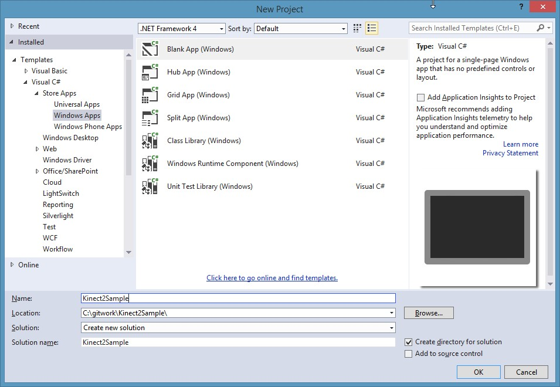
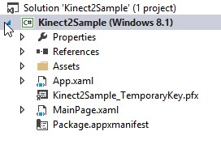
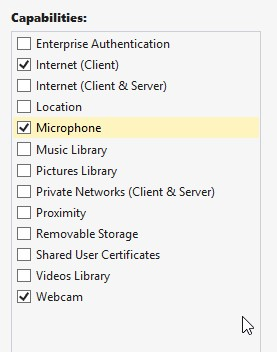
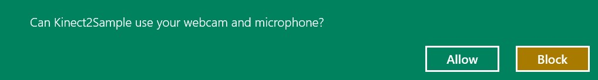

The Hands On Labs to complete a sample application for Windows 8.1 and the Kinect 2 for Windows
Estimated Time to Complete: 10min
This lab is part of a series which takes you through the creation process of a Windows 8.1 Store Application which uses every available feature of the Kinect 2. This is the first lab in the series, and it shows you how to set up the initial development environment to build an app using Kinect 2.
This lab will explain the following:
This lab comes with a starting point solution and a completed solution of the covered exercises if required.
This exercise will show you how to set up the development environment for building a Kinect for Windows 2 application in Windows 8.1, and how to access the Default Sensor in code. This lab and all subsequent labs in this series are built using C# and assume you have a fundamental knowledge of the language. The screenshots here are from Visual Studio Pro 2013 Update 2 but Community Edition is identical.
Open Visual Studio 2013 and create a new project in a directory
you can access. Click File > New > Project and select a Blank App
for Windows in C#. Name the project Kinect2Sample. Then click OK to
create the project:

The project will be created with the default MainPage.xaml and
App.xaml, and added to the project in the Solution Explorer on the right:

If you have not downloaded the public Kinect 2 SDK, you should download it and install it before proceeding: http://www.microsoft.com/en-us/download/details.aspx?id=44561 ~280MB
Once installed, the Kinect 2 SDK can be referenced for use in the new project. In the Solution Explorer, right click References and click Add Reference… to open the Reference Manager.
To add the WindowsPreview.Kinect.dll which uses the .NetCore library (suitable for Windows Store apps), follow these steps:
Kinect 2.0 applications are compatible with x86 and x64 architectures, but are not compatible with ARM systems. This dependency from the Kinect 2.0 library means that you must change the project configuration to either x86 or x64 instead of the currently set “Any CPU”.
Now you can build and run the application to make sure the references work and are compatible. Click BUILD then Build Solution, then the project will build and should present no errors. To Run or Debug the application you can either:
In the future, the steps 7 and 8 are required when asked to Build and Run the application.
Open the MainPage.xaml.cs code behind file in Visual Studio by double clicking it.
To get the default sensor for the Kinect, add the WindowsPreview.Kinect namespace, and a private class level variable for the KinectSensor. Then in the constructor of MainPage class select the default sensor and open it. To do this, add the highlighted code below:
// ... other namespacesusing WindowsPreview.Kinect;namespace Kinect2Sample { public sealed partial class MainPage : Page {private KinectSensor kinectSensor = null;public MainPage() {// one sensor is currently supportedthis.kinectSensor = KinectSensor.GetDefault();// open the sensorthis.kinectSensor.Open();this.InitializeComponent(); } } }
Now add the Capability for the application to use the Kinect as a webcam and microphone device. Open the Package.appxmanifest by double clicking it in the Solution Explorer. Navigate to the Capabilities tab, then tick the Microphone and Webcam capabilities:
Make sure the Kinect 2.0 device is now plugged into both power and a USB3.0 port on the machine.
Build and Run the application, and you will be prompted to allow
the Kinect:

Click Allow.
NOTE: if you click Block by accident, then you can re-enable the
microphone and camera through settings for the app in the charms bar.
The same black screen will appear in the application but the
infrared depth lights and the white status led of the Kinect 2 will
turn on!
Stop debugging now. The Kinect 2.0 is ready to be used and this is the end of the first exercise.
This lab has taught you how to create a Windows 8.1 Store application to work with Kinect for Windows 2.0. The code references the SDK within WindowsPreview which is a Windows 8.1 extension SDK.
If you wish to make a Windows 8.1 desktop application (a non-store application) with full access to the .Net Framework, then there is a different Kinect reference to can use. To use the desktop Kinect library reference, follow these steps: To add The Microsoft.Kinect.dll which uses the full .NetFramework library, follow these steps in the Reference Manager.
Currently the Kinect is simply turning on in the application, and with this confirmation you know that the application is activating the Kinect.
There is code available for the completed solution of the project in this lab. The next lab will begin from this code.